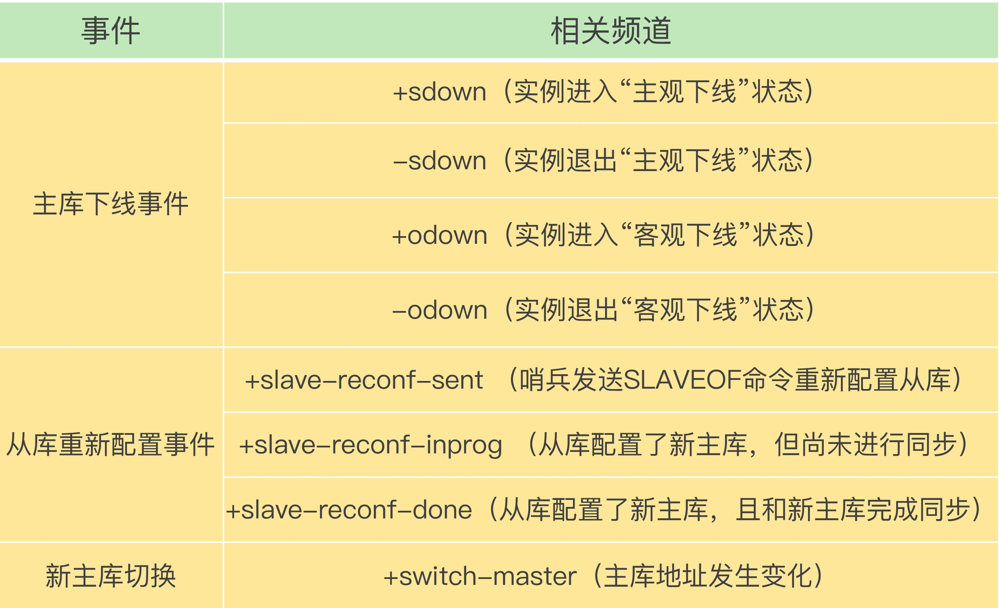

哨兵集群
集群组成
- pub/sub 机制
- 主库上有一个名为“sentinel:hello”的频道，不同哨兵就是通过它来相互发现，实现互相通信的
发现从库
- INFO命令获取从库
- info replication
订阅事件
SUBSCRIBE +odown 所有实例进入客观下线状态的事件

- 客户端订阅事件，通过pubsub得知主从切换
假设有一个 Redis 集群，是“一主四从”，同时配置了包含 5 个哨兵实例的集群，quorum 值设为 2。在运行过程中，如果有 3 个哨兵实例都发生故障了，此时，Redis 主库如果有故障，还能正确地判断主库“客观下线”吗？如果可以的话，还能进行主从库自动切换吗？此外，哨兵实例是不是越多越好呢，如果同时调大 down-after-milliseconds 值，对减少误判是不是也有好处呢？
- quorum=2可以判断客观下线
- 不能选出leader，所以不能进行主从切换
- 交换信息，哨兵实例越多，通信的次数也就越多，而且部署多个哨兵时，会分布在不同机器上，节点越多带来的机器故障风险也会越大，这些问题都会影响到哨兵的通信和选举，出问题时也就意味着选举时间会变长，切换主从的时间变久
- 是有好处的，适当调大down-after-milliseconds值，当哨兵与主库之间网络存在短时波动时，可以降低误判的概率。